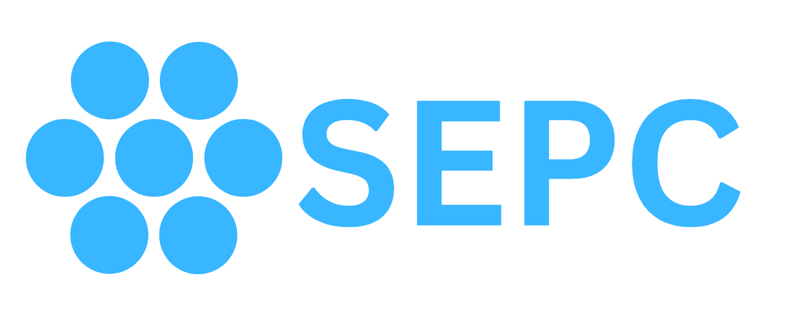

How the Papers Database works, what it is for, and how submissions are handled.
The Papers Database is a free, student-run index of electric propulsion literature, maintained by the Student Electric Propulsion Consortium (SEPC). It exists to make it easier for students and early-career researchers to find relevant work.
The database stores bibliographic information only (titles, authors, institutions, years and links). We do not claim ownership of any listed paper.
The database is still in development. There are a significant number of papers yet to be uploaded, and many left to be cleaned. We are working on cleaning the database but please contact us with any issues found.
Anyone can submit a paper using the upload box on the main page. To keep the database consistent, please:
Every submission is reviewed by the SEPC team before it appears in the database. Nothing is published automatically.
We may decline, edit or remove an entry if it:
Review times vary, as the team is made up of volunteers. We cannot guarantee that every submission will be accepted.
If you spot an error, or you are an author or rights holder and would like an entry corrected or removed, please contact us and we will deal with it as quickly as we can.
Contact: sepcteam@gmail.com
The database is provided as is, without warranty of any kind. We make reasonable efforts to keep it accurate, but cannot guarantee that every entry is complete, current or error-free. Links to external sites are provided for convenience, and SEPC is not responsible for their content.
Last updated: November 2026